Homepage · existing hero, slider and Service Times card stay above these sections (unchanged)
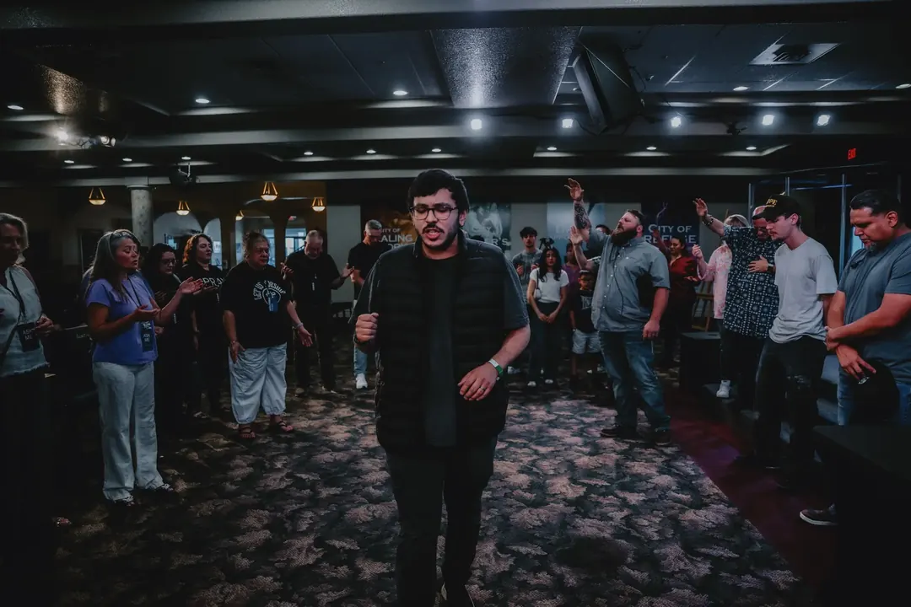
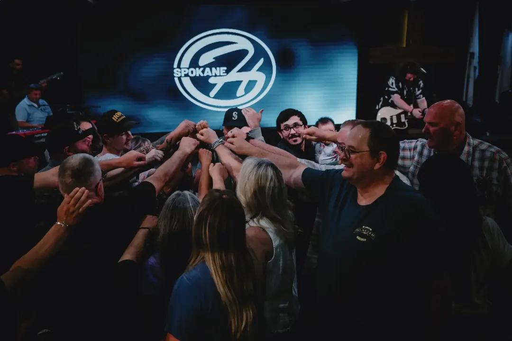
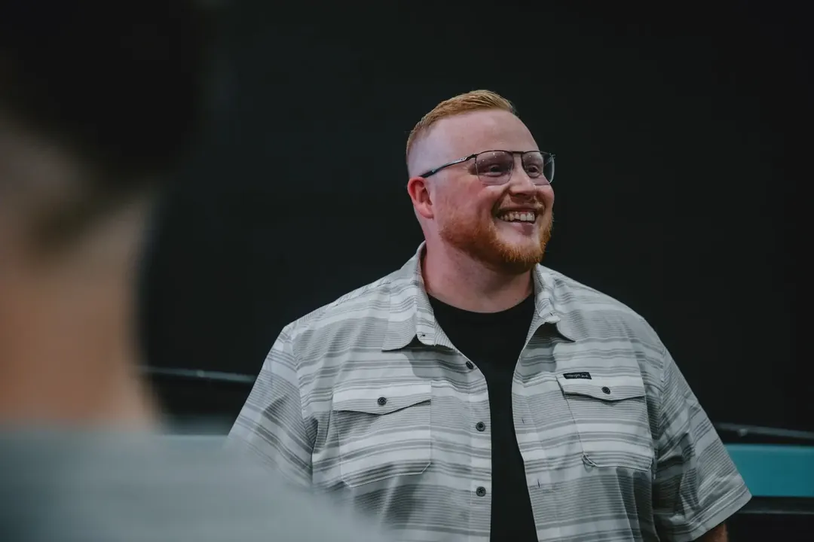
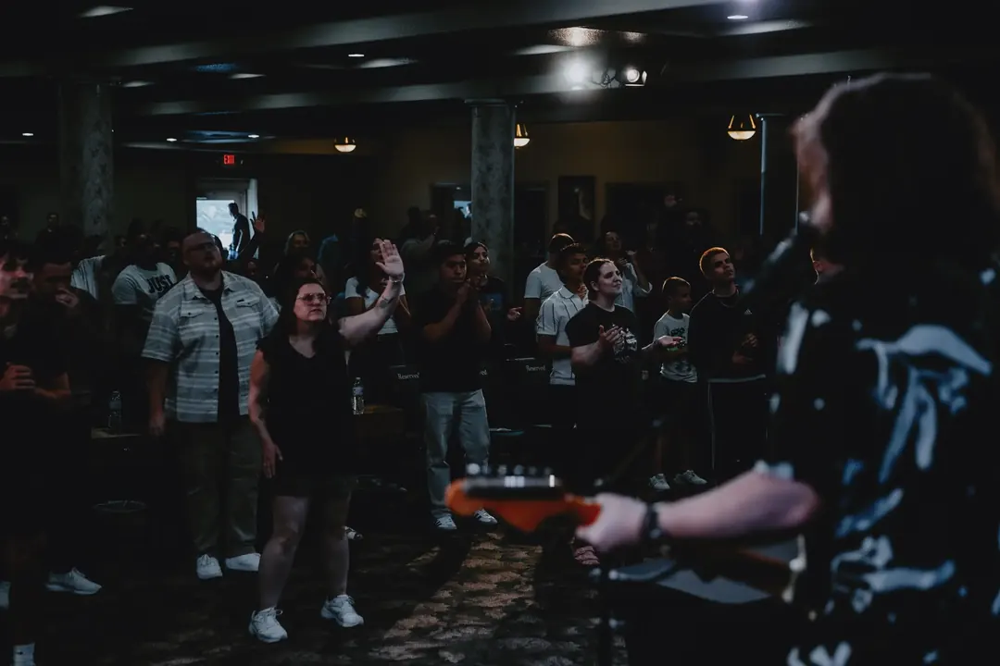
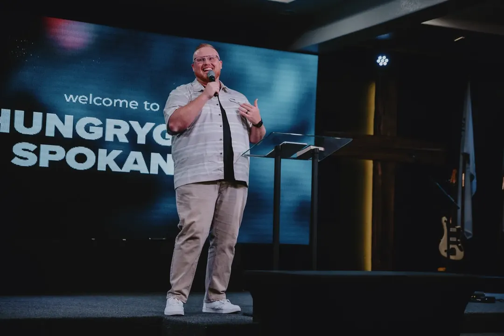
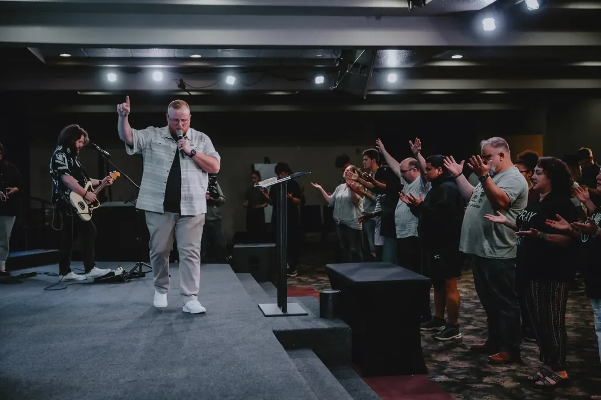
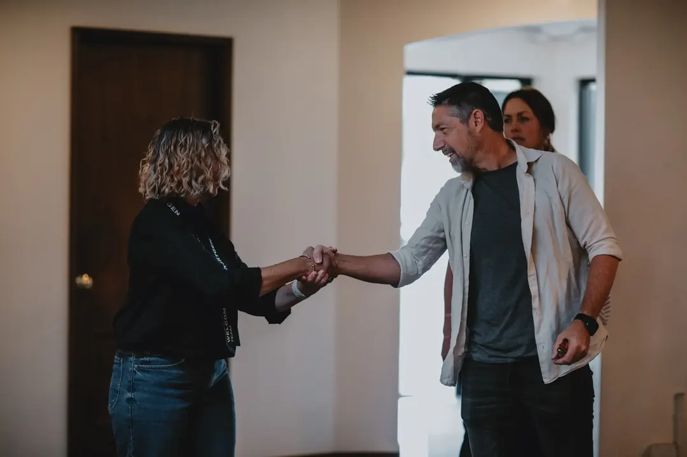
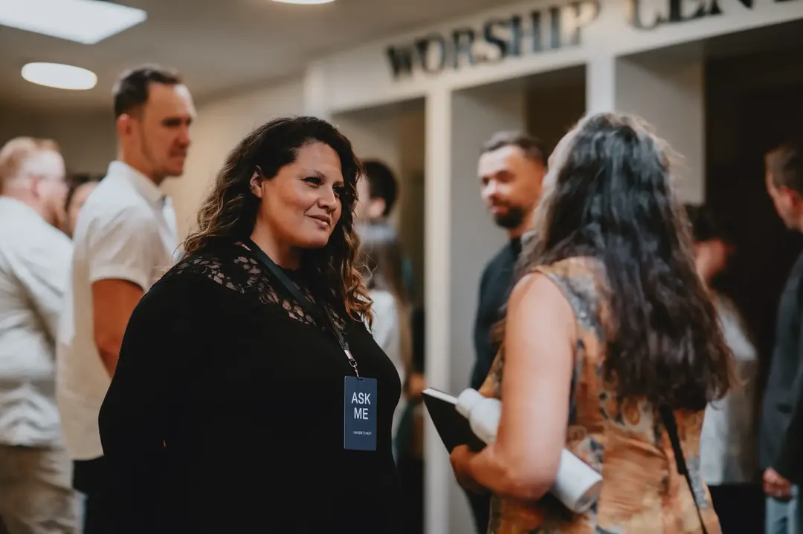
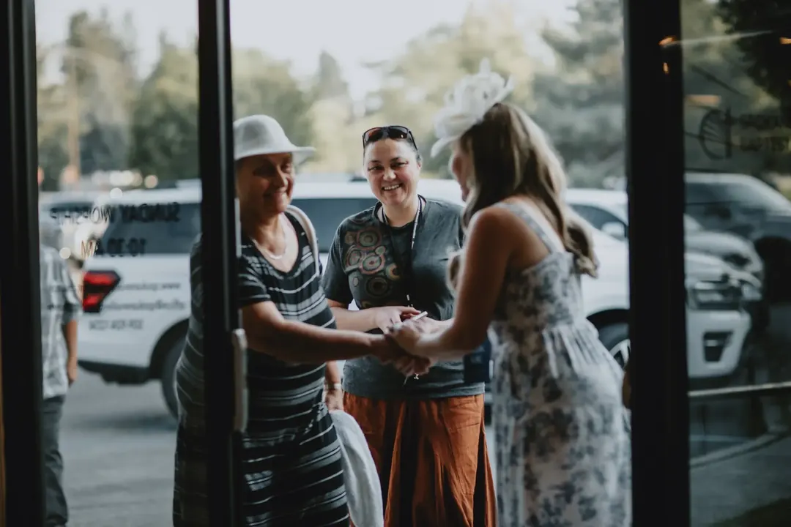
Freedom · Healing · Breakthrough
Our Prayerline service is dedicated to freedom, healing, and breakthrough through the power of Jesus. It is open to anyone in the community. Join us on the last Sunday of every month for a powerful time of prayer and ministry.
Next Prayerline: Sunday, January 31, 2027. Registration is required. If you are coming for prayer, please arrive by 4:00 PM for pre-prayer preparation; the service starts at 6:00 PM.
Needs confirmation — remove this tag before publishing
A safe, Spirit-filled place for kids to meet Jesus.
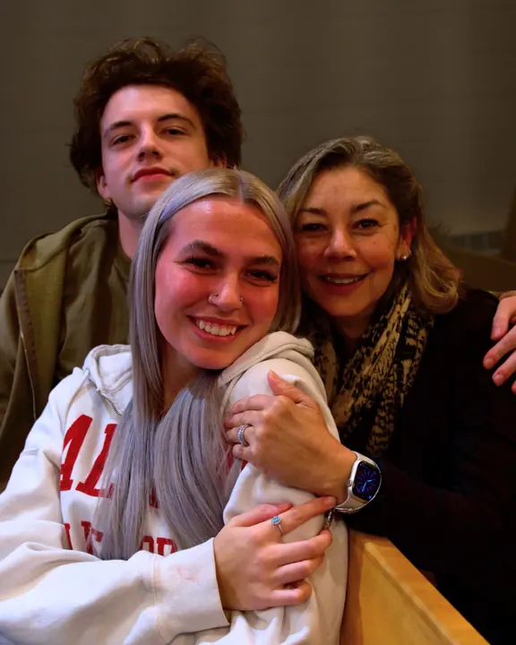
Youth (opens in a new tab)Youth meet in Connect Groups. Sign up on Church Center, or visit the Connect Groups page.
Homepage · Phase One / Christmas wish list teaser goes here (built separately in /building/)
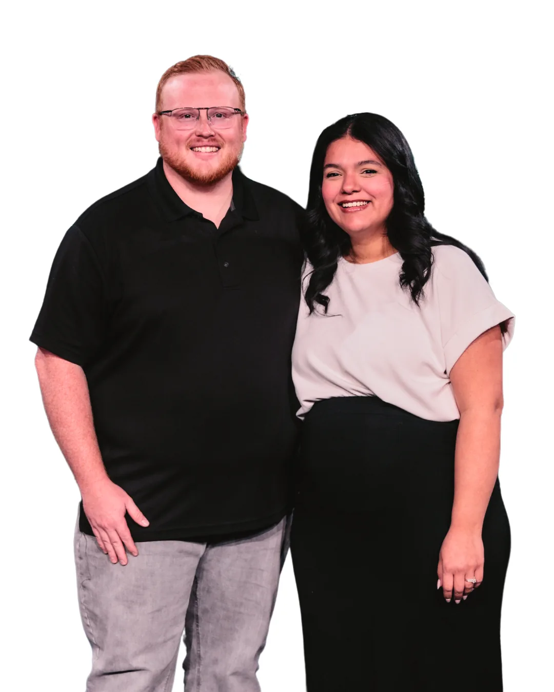
Campus Pastors
As the campus pastors of HungryGen Spokane, we are passionate about seeing lives transformed through the power of Jesus Christ. Our mission is to disciple and raise up believers who are not only devoted to Jesus but are also called to be kingdom ambassadors, impacting their communities with the love and truth of the gospel.
(Bio text unchanged from the live site; shortened here.)